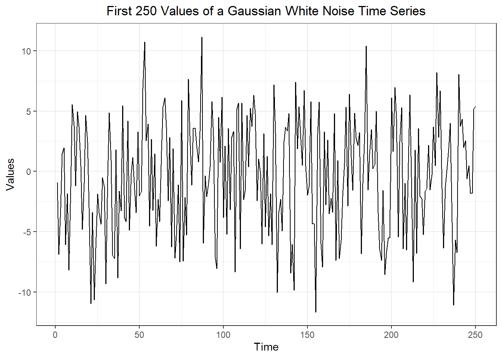

# White noise data
white_noise_df <- rio::import("https://byuistats.github.io/timeseries/data/white_noise.parquet")White Noise and Random Walks
Chapter 4: Lesson 1
Learning Outcomes
Characterize the properties of discrete white noise
- Define Residual error
- Define discrete white noise (DWN)
- Define Gaussian white noise
- Simulate Gaussian white noise with R
- Plot DWN simulation results
- State DWN second order properties
- Explain how to estimate a DWN process
- State the assumptions needed to categorize residual error series as white noise
Characterize the properties of a random walk
- Define a random walk
- Define the second order properties of a random walk
- Define the backward shift operator
- Use the backward shift operator to state a random walk as a sequence of white noise realizations
- Define a random walk with drift
Preparation
- Read Sections 4.1-4.3
Learning Journal Exchange (10 mins)
Review another student’s journal
What would you add to your learning journal after reading another student’s?
What would you recommend the other student add to their learning journal?
Sign the Learning Journal review sheet for your peer
Class Activity: White Noise (5 min)
Definition
In this class, we are learning to investigate different types of time series. Up to this point, we have focused mostly on time series with distinct seasonal behavior. We will not focus on what are called stochastic processes or random processes, where there is not necessarily a seasonal component. We first focus on white noise.
Definition of a Discrete White Noise (DWN) Process
A time series \(\{w_t: t = 1, 2, \ldots, n\}\) is a discrete white noise (DWN) if the variables \(w_1, w_2, \ldots, w_n\) are independent and identically distributed with mean 0. The assumption that the variables are identically distributed implies that there is a common variance denoted \(\sigma\). The assumption of independence means that the covariance (and correlation) between different variables will be zero: \(cov(w_i, w_j) = 0\) and \(cor(w_i, w_j) = 0\) if \(i \ne j\).
If the variables are normally distributed, i.e. \(w_i \sim N(0,\sigma^2)\), the DWN is called a Gaussian white noise process. The normal distribution is also called the Gaussian distribution, after Carl Friedrich Gauss.
Simulation
The following simulation illustrates a white noise time series.

Visualizing White Noise
The data in the file white_noise.parquet were generated by a Gaussian white noise process.
The first 250 points in this time series are illustrated here:
Show the code
white_noise_df |>
mutate(t = 1:nrow(white_noise_df)) |>
head(250) |>
ggplot(aes(x = t, y = x)) +
geom_line() +
theme_bw() +
labs(
x = "Time",
y = "Values",
title = "First 250 Values of a Gaussian White Noise Time Series"
) +
theme(
plot.title = element_text(hjust = 0.5)
)
Here is a histogram of the 2500 values from this DWN distribution.
Show the code
white_noise_df |>
mutate(density = dnorm(x, mean(white_noise_df$x), sd(white_noise_df$x))) |>
ggplot(aes(x = x)) +
geom_histogram(aes(y = after_stat(density)),
color = "white", fill = "#56B4E9", binwidth = 1) +
geom_line(aes(x = x, y = density)) +
theme_bw() +
labs(
x = "Values",
y = "Frequency",
title = "Histogram of Values from a Gaussian White Noise Process"
) +
theme(
plot.title = element_text(hjust = 0.5)
)
Notice that the values follow a normal distribution. This suggests the data are from a Gaussian white noise distribution.
Second-Order Properties
When we refer to the second-order properties of a time series, we are talking about its variance and covariance. The mean is a first-order property, the covariance is a second-order property.
Second-Order Properties of a Discrete White Noise Process
If \(\{w_t\}_{t=1}^n\) is a DWN time series, then the population has the following properties.
\[ \mu_w = 0 \] and \[ cov(w_t, w_{t+k}) = \begin{cases} \sigma^2, & k = 0 \\ 0, & k \ne 0 \end{cases} \] The correlation function is therefore
\[ \rho_k = \begin{cases} 1, & k = 0 \\ 0, & k \ne 0 \end{cases} \]
Note that the properties given above are theoretical properties of the population, not estimates computed using a sample. The sample autocorrelations will not equal zero, due to randomness inherent in sampling.
In your introductory statistics course, you learned about Type I error.
Type I Errors
Suppose we will conduct a hypothesis test with a level of significance equal to \(\alpha = 0.05\). If the null hypothesis is true, due to sampling variation there is a probability of 0.05 that we will reject the null hypothesis…even though it is true. We refer to this as making a Type I Error.
When we create a correlogram, we actually conduct one hypothesis test for each value of \(k\). With so many hypothesis tests, it is not surprising if some of them show a significant correlation due to chance alone. In this case, we tend to disregard correlations that are barely significant and inexplicable.
Fitting the White Noise Model
Typically, a DWN series arises in the random component of another time series. If we have fully explained the level and seasonality in the time series, then the only component left is the random component, which would ideally follow a DWN process.
Since the mean of a DWN time series is zero, the only parameter we need to fit is the variance.
Class Activity: Random Walks (15 min)
Definitions
Consider moving on a number line, where your movements are determined by a discrete white noise (DWN) process. Each successive value indicates how far you will move along the number line from your current position. This is mathematically equivalent to allowing your position at time \(t\) to be the sum of all the observed DWN values up to time \(t\).
Definition of a Random Walk
Let \(\{x_t\}\) be a time series. Then, \(\{x_t\}\) is a random walk if it can be expressed as \[ x_{t} = x_{t-1} + w_{t} \] where \(\{w_t\}\) is a white noise series.
There are other ways to represent this expression.
This process of back substitution is so common, we define notation to handle it.
Definition of the Backward Shift Operator
We define the backward shift operator or the lag operator, \(\mathbf{B}\), as: \[ \mathbf{B} x_t = x_{t-1} \] where \(\{x_t\}\) is any time series.
We can apply this operator repeatedly. We will use exponential notation to indicate this.
\[ \mathbf{B}^2 x_t = \mathbf{B} \mathbf{B} x_t = \mathbf{B} \left( \mathbf{B} x_t \right) x_t = \mathbf{B} x_{t-1} = \mathbf{B} x_{t-2} \]
In general, \[ \mathbf{B}^n x_t = \underbrace{\mathbf{B} \cdot \mathbf{B} \cdot \cdots \cdot \mathbf{B}}_{n ~ \text{terms}} x_t = \mathbf{B}^{n-1} \left( \mathbf{B} x_t \right) = \mathbf{B}^{n-1} \left( x_{t-1} \right) = \mathbf{B}^{n-2} \left( x_{t-2} \right) = \cdots = \mathbf{B} x_{t-(n-1)} = x_{t-n} \]
We will practice applying this operator.
Simulation
The following simulation illustrates a random walk.
Second-Order Properties
The second-order properties of a random walk are summarized below.
Second-Order Properties of a Random Walk
If \(\{x_t\}_{t=1}^n\) is a random walk, then the population has the following properties.
\[ \mu_x = 0 \] and \[ cov(x_t, x_{t+k}) = t \sigma^2 \] Note that the covariance of the process depends on \(t\). The covariance depends on \(t\), so random walks are non-stationary. The variance is unbounded as \(t\) increases. That means a random walk will not provide good predictions in the long term.
If \(k>0\), the correlation function is therefore
\[ \rho_k = \frac{ cov(x_t, x_{t+k}) }{ \sqrt{var(x_t)} \sqrt{var(x_{t+k})} } = \frac{t \sigma^2}{\sqrt{t \sigma^2} \sqrt{(t+k) \sigma^2}} = \frac{1}{\sqrt{1+\frac{k}{t}}} \]
Note that if \(0 < k \gg t\), then \(rho_k \approx 1\). Because of this, a correlogram for a random walk will typically demonstrate positive autocorrelations that start near 1 and slowly decrease as \(k\) increases.
Differencing a Time Series
Computing the difference between successive terms of a random walk leads to a discrete white noise series. In many cases, differencing sequential terms of a non-stationary process can lead to a stationary process of differences.
Consider the closing price of McDonald’s stock illustrated in the time plot in Figure 1, and Figure 2 gives the differences in the closing prices of the stock.
Show the code
# Set symbol and date range
symbol <- "MCD"
date_start <- "2021-01-01"
date_end <- "2024-01-01"
# Fetch stock prices (can be used to get new data)
# df_stock <- tq_get(symbol, from = date_start, to = date_end, get = "stock.prices")
# df_stock |> rio::export("data/stock_price_mcd.parquet")
# Retrieve static file
df_stock <- rio::import("data/stock_price_mcd.parquet")
# Transform data into tibble
stock_example_tsibble <- df_stock %>%
mutate(
dates = date,
year = lubridate::year(dates),
month = lubridate::month(dates),
value = adjusted
) %>%
select(dates, year, month, value) %>%
as_tibble() %>%
arrange(dates) |>
mutate(
year = lubridate::year(dates),
month = lubridate::month(dates)
) %>%
mutate(diff = value - lag(value)) |>
as_tsibble(index = dates, key = NULL)
plot_ly(stock_example_tsibble, x = ~dates, y = ~value, type = 'scatter', mode = 'lines') %>%
layout(
xaxis = list(title = paste0("Dates (", format(ymd(date_start), "%d/%m/%Y"), " to ", format(ymd(date_end), "%d/%m/%Y"), ")" ) ),
yaxis = list(title = "Closing Price (US$)"),
title = paste0("Time Plot of ", symbol, " Daily Closing Price")
)Show the code
# Generate time series plot using plot_ly
plot_ly(stock_example_tsibble, x = ~dates, y = ~diff, type = 'scatter', mode = 'lines') %>%
layout(
xaxis = list(title = paste0("Dates (", format(ymd(date_start), "%d/%m/%Y"), " to ", format(ymd(date_end), "%d/%m/%Y"), ")" ) ),
yaxis = list(title = "Closing Price (US$)"),
title = paste0("Difference of ", symbol, " Daily Closing Price")
)Difference Operator
Since is differencing nonstationary time series often leads to a stationary series, we create a formal operator to express this process.
Definition of the Difference Operator
The difference operator, \(\nabla\), is defined as:
\[\nabla x_t = x_t - x_{t-1} = (1-\mathbf{B}) x_t\]
Higher-order differencing can be denoted
\[\nabla^n x_t = (1-\mathbf{B})^n x_t\]
To see what this expression gives us, note that \(\nabla\) gives a new time series that is comprised of the differences between successive terms of the original time series. The operator \(\nabla^2\) generates a time series that is comprised of the differences between successive terms of the differenced time series. It is the difference of the differences, or the second difference.
Small Group Activity: SectionTitle (xxx min)
Class Activity: SectionTitle (xxx min)
Homework Preview (5 min)
- Review upcoming homework assignment
- Clarify questions